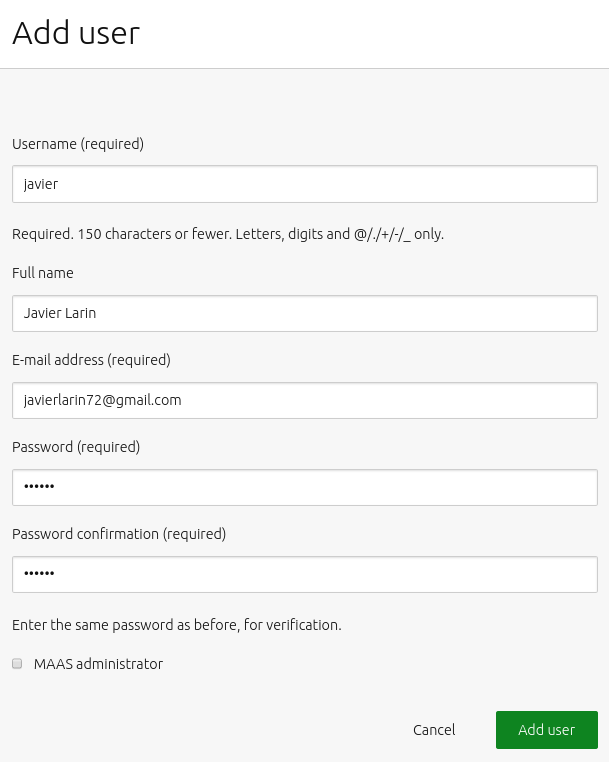
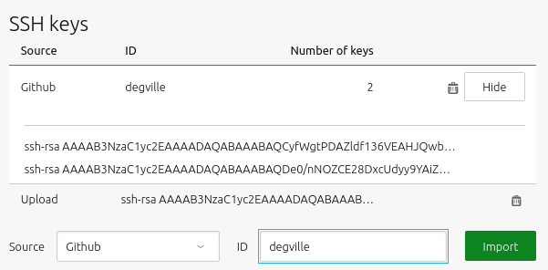
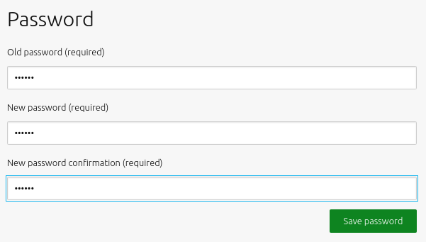

User accounts
Presumably, you have already created an administrative user, but MAAS can also have regular users (who log in to the interface or use the CLI). What users you create depends on how you intend to use MAAS. An administrator can manage all aspects of MAAS, whereas a non-administrator user can perform a subset of tasks on machines they acquire and deploy. MAAS limits the details a non-admin user can view, such as nodes allocated to other users. Also, non-admin users cannot access the global settings page in the web UI, nor any of the equivalent API calls from the command line.
Additionally, in order for a user to log into a MAAS-deployed machine that user must have their public SSH key installed on it. This article explains how to create users and add their public SSH keys to MAAS, so that every deployed machine will automatically have that key installed.
Quick questions you may have:
- How do I add a user?
- How do I change a user’s preferences?
- How do I add an SSH key for a user?
- How do I add an API key for a user?
- How do users change their password?
You can manage user accounts from the ‘Users’ tab of the ‘Settings’ page.
 >
>
[note] A currently logged in user cannot delete themselves from the web UI. [/note]
Add a user
Clicking the ‘Add user’ button will result in a form to be displayed:
>
Fill in the fields and hit ‘Add user’ when done.
User preferences
Clicking the MAAS username in the top right corner will show that user’s preferences.
SSH keys
Before a user can deploy a machine, they must import at least one public SSH key into MAAS. This key allows the user to access the deployed machine. The user must possess the corresponding private key. See Public key authentication (ssh.com) if you’re not familiar with SSH keys.
[note] The user normally imports their initial SSH key on the first login to the web UI (see Configuration journey). [/note]
To add a locally-generated public key, select ‘Upload’ from the ‘Source’ menu and paste the complete contents of your key file, usually called id_rsa.pub, into the ‘Public key’ field. Click ‘Import’ to add the key to MAAS.
Public keys residing on either Launchpad or GitHub can also be added. Select either from the ‘Source’ menu and specify the user ID associated with the key(s). Press the ‘Import’ button to add any keys MAAS discovers to the current user’s MAAS account.
>
API key
The user preferences page includes an API key for the currently active user. This key can be copied and regenerated as needed. The API key is used to login to the API from the MAAS CLI. Other services connecting to MAAS such as Juju will also need this key.
Change password
The current user can change their password at the bottom of the page by entering the old password and entering the new password twice. Click ‘Save password’ to finish.
>
[note] An administrator can change any user’s password from within the ‘Users’ tab of the ‘Settings’ page. [/note]